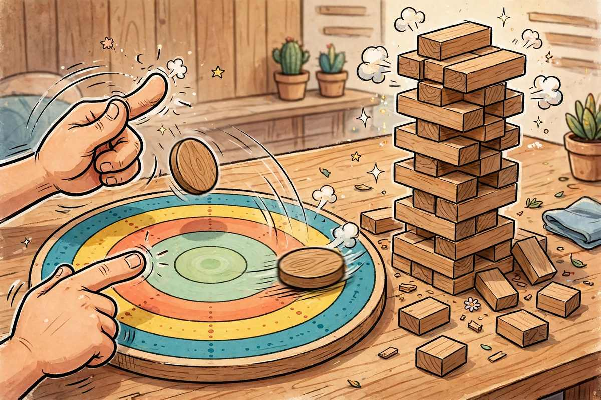

Dexterity games, explained

The common pitch for dexterity games is that they are light, silly, and anyone can win. The reception at real tables is more divided, and more interesting. Players who love them praise the laughter and the instant readability: a flick lands or it does not, a tower stands or it falls. Players who bounce off them usually cite the same two facts from the other side. Physical skill gaps do not shrink with clever play, and components take real wear from dropping, flicking, and toppling. Both receptions are accurate, because the mechanic puts the contest in the hands, literally.
Category listings describe the family plainly: outcomes depend on motor skills such as flicking, stacking, balancing, or rapid reflexes, rather than on abstract strategy alone. Crokinole, with a round board about 26 inches across and discs flicked toward a centre hole worth 20 points, and Jenga, a tower of 54 wooden blocks created by Leslie Scott and first published in 1983, test almost opposite hands. Sorting the family by physical task, not by theme, is how a buyer finds the right one.
The reception check: loved at loud tables, divisive at quiet ones
Documented strengths of the category are consistent across guides: turns are immediate, goals are easy to grasp, and a collapse or a perfect shot creates a moment the whole table shares, including spectators. That spectator quality is rare in hobby games and explains why dexterity titles thrive at mixed age and mixed experience tables.
The documented drawbacks are just as consistent. A steady hand is an advantage no rulebook can balance away, so a large skill gap can make results feel settled before play starts. Repeated physical play also scuffs pieces and sends small parts off the table. Neither drawback kills the category. Both should shape which title a group buys and where it gets played.
Four families, four different hands
Flicking and shooting. A disc, car, or figure is flicked across a surface toward a target, sometimes knocking opposing pieces away. Aim, force control, and reading a slide are the skills. Failure looks like a shot that runs long, stops short, or clears the target off the board along with the shooter's own piece.
Stacking and balancing. Pieces are placed onto a shared structure that grows less stable with every turn. Patience, a light touch, and judging weight are the skills. Failure is public and total: the structure falls on someone's turn, and that someone is usually the loser of the round.
Speed and reflex. Some dexterity games strip away turns and reward the fastest correct action, grabbing, matching, or placing before an opponent reacts. Recognition speed joins motor skill here, which suits loud groups and tires quiet ones quickly.
Magnetic and guided control. A smaller modern family moves pieces indirectly, with magnets or tools between the hand and the piece. Klask, listed in category references as a 2014 magnetic game playing in about 10 minutes, is the familiar name here. Indirect control softens the pure aim test and adds a different kind of wobble.
Two spec verified poles: Crokinole and Jenga
Specs verified against rules and reference listings for this guide, November 16, 2026:
| Spec | Crokinole | Jenga |
|---|---|---|
| Origin | Invented in 1876 in Tavistock, Ontario, Canada | Created by Leslie Scott, published 1983, marketed by Hasbro |
| Players | 2 to 4 | 1 or more |
| Core equipment | Round board about 26 inches across, wooden discs, centre hole | Tower built from 54 wooden blocks |
| The physical task | Flick discs from a home quadrant toward the centre, discs must be flicked, never pushed | Remove one block at a time and place it on top of the tower |
| Scoring or ending | Rings worth 5, 10, and 15 points, centre hole worth 20, discs in the ditch score nothing | The tower grows less stable until it falls |
Read the contrast, not just the rows. Crokinole is a precision contest against an opponent on a fixed, generous surface, and a missed flick usually costs position, not the whole game. Jenga is a patience contest against a shared structure, and one bad removal can end everything at once. Groups that dislike direct confrontation often prefer the second shape. Groups that love a duel should start with the first.
Table footprint differs just as sharply. A Crokinole board needs its full circle plus elbow room on four sides. A Jenga tower needs a small, level, vibration free patch and room for players to walk around it. The better game on paper loses to the game the room can actually host.
The table test: surface, space and skill gap
Dexterity is a physical topic, so a short setup procedure earns its place here. Run it before a first session of any flicking or stacking game:
1. Level the surface. Put the board or tower base down and check for wobble or slope. A sloped table quietly rigs every flick and every stack.
2. Clear the fall zone. Move drinks, spare pieces, and phones out of disc flight paths and tower fall lines.
3. Agree the touch rules. Settle in advance what counts as a legal flick, a nudged piece, or a steadied tower, using the game's own rules where they speak to it. In Crokinole, for example, discs are flicked and never pushed.
4. Set the skill gap rule. Decide whether experienced players take a handicap, play cooperatively, or simply accept lopsided early games while new hands learn.
Success check: a practice flick slides straight, a practice block can be placed without the table shaking, and every player can state the touch and handicap rules. If any of those fail, fix the room before blaming the game.
How to pick your first dexterity game
Use three questions. First, which failure does the group find funny? A tower falling suits slapstick groups; a duel of near misses suits competitive ones. Second, how big is the skill spread? Wide spreads favour stacking and balancing games, where luck of the structure softens gaps, over pure flicking duels. Third, what will the table and storage allow? A large board is a furniture commitment, while a block tower packs small and plays almost anywhere flat.
For a next step into physical play with a calmer pace, tile laying games keep the tactile pleasure and remove the falling over.
— Rex Bennett, Entertainment Writer